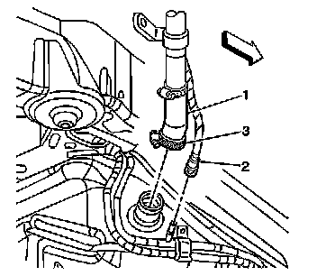
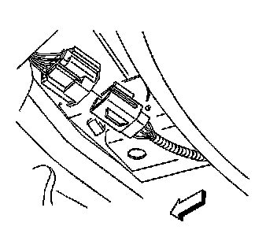
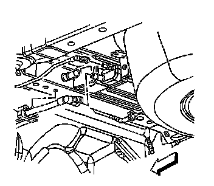
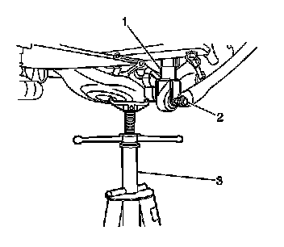
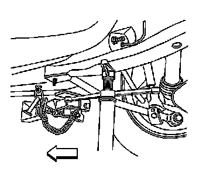
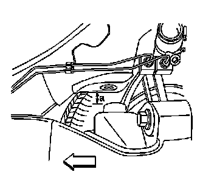
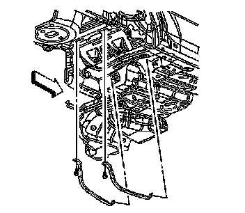

Fuel Tank Replacement
Fuel Tank Replacement
Removal Procedure
Caution: Refer to Gasoline/Gasoline Vapors Caution (Service Precautions) .
1. Drain the fuel tank. Refer to Fuel Tank Draining (Service and Repair) .
2. Relieve the fuel system pressure. Refer to Fuel Pressure Relief (With CH 48027) (Fuel Pressure Relief (With CH 48027))Fuel Pressure Relief (Without CH 48027) (Fuel Pressure Relief (Without CH 48027)) .
3. Remove the exhaust system. Refer to Exhaust System Replacement (Service and Repair) .
4. Remove the propeller shaft. Refer to Rear Propeller Shaft Replacement (RWD) (Rear Propeller Shaft Replacement (RWD)) .

5. Disconnect the filler hose (1) from the fuel tank.
6. Disconnect the filler vent tube (2) from the evaporative emission (EVAP) hose. Refer to Plastic Collar Quick Connect Fitting Service (Plastic Collar Quick Connect Fitting Service) .

7. Refer to Metal Collar Quick Connect Fitting Service (Metal Collar Quick Connect Fitting Service) or Plastic Collar Quick Connect Fitting Service (Plastic Collar Quick Connect Fitting Service) in order to disconnect the following from the chassis bundle:
* The fuel feed hoses (3 and 4)
* The fuel EVAP hose

8. Disconnect the fuel tank electrical connector.

9. Disconnect the EVAP hoses from the EVAP canister.
10. Pull outward on the retainer tab in order to disengage the retainer from the chassis.
11. Disconnect the electrical connector from the EVAP canister.

12. Raise the lower control arms using a suitable screw jack (3) in order to remove the load from the lower shock bolts (2).
13. Remove the lower shock bolts (2).
14. Remove the screw jack (3).

15. Position the screw jack under the rear frame near the adjuster tie bar, in order to support the front of the rear frame.
16. Remove the 2 front bolts from the rear frame.

Important: Use care not to over extend the rear brake hoses.
17. Lower the screw jack until there is approximately 50 mm (2 in) (a) between the front mounting surface of the rear frame and the chassis.
This will allow clearance to access the fuel tank strap bolts.

18. Remove the fuel tank strap bolts.
19. Position the fuel tank straps downward around the rear frame.
20. Carefully bend the fuel tank straps ONLY enough to allow the fuel tank to be removed.
Important: Ensure the following are free from the surrounding components while lowering the fuel tank:
* The fuel tank wiring harness
* The EVAP wiring harness
* The EVAP hoses at the EVAP
* The fuel/EVAP hoses at the chassis pipes
21. With the aid of an assistant, carefully lower the fuel tank from the vehicle.
22. Remove the following components if replacing just the fuel tank:
* The primary fuel tank module-Refer to Primary Fuel Tank Module Replacement (Primary Fuel Tank Module Replacement) .
* The secondary fuel tank module-Refer to Secondary Fuel Tank Module Replacement (Secondary Fuel Tank Module Replacement) .
* The fuel tank pressure sensor-Refer to Fuel Tank Pressure Sensor Replacement (Service and Repair) .
Installation Procedure
1. Install the following components if fuel tank replacement was necessary:
* The primary fuel tank module-Refer to Primary Fuel Tank Module Replacement (Primary Fuel Tank Module Replacement) .
* The secondary fuel tank module-Refer to Secondary Fuel Tank Module Replacement (Secondary Fuel Tank Module Replacement) .
* The fuel tank pressure sensor-Refer to Fuel Tank Pressure Sensor Replacement (Service and Repair) .
Important: Ensure the following are properly routed while raising the fuel tank:
* The fuel tank wiring harness
* The EVAP wiring harness
* The EVAP hoses at the EVAP
* The fuel/EVAP hoses at the chassis pipes
2. With the aid of an assistant, carefully raise the fuel tank to the vehicle, aligning the filler neck with the filler hose.
Important: Ensure the fuel tank straps are not pressed into the fuel tank.
3. Carefully bend the fuel tank straps back to their original form.
4. Position the fuel tank straps around the rear frame and upward into position, aligning the holes in the straps with the threaded holes in the chassis.
Notice: Refer to Fastener Notice (Fastener Notice) .
5. Install the fuel tank strap bolts.
Tighten the fuel tank strap bolts to 50 N.m (37 lb ft).
6. Connect the filler hose (1) to the fuel tank.
Tighten the fuel filler tube hose clamp (3) to 3.5 N.m (31 lb in).
7. Connect the filler vent tube (2) to the EVAP hose. Refer to Plastic Collar Quick Connect Fitting Service (Plastic Collar Quick Connect Fitting Service) .
8. Connect the EVAP hoses to the EVAP canister.
9. Insert the retainer into the chassis and press inward on the tab to engage.
10. Connect the electrical connector to the EVAP canister.
11. Connect the fuel tank electrical connector.
12. Refer to Plastic Collar Quick Connect Fitting Service (Plastic Collar Quick Connect Fitting Service) or Metal Collar Quick Connect Fitting Service (Metal Collar Quick Connect Fitting Service) in order to connect the following to the chassis bundle:
* The fuel feed hoses (3 and 4)
* The fuel EVAP hose
13. Raise the rear frame using the screw jack.
14. Install the 2 front bolts to the rear frame.
Tighten the rear frame bolts to 265 N.m (195 lb ft).
15. Remove the screw jack.
16. Position the screw jack (3) under the lower control arm in order to raise the lower control arms (2).
17. Install the lower shock bolts (2).
Tighten the lower shock bolts to 150 N.m (111 lb ft).
18. Remove the screw jack (3).
19. Install the propeller shaft. Refer to Rear Propeller Shaft Replacement (RWD) (Rear Propeller Shaft Replacement (RWD)) .
20. Install the exhaust system. Refer to Exhaust System Replacement (Service and Repair) .
21. Refill the fuel tank.
22. Inspect for fuel leaks.